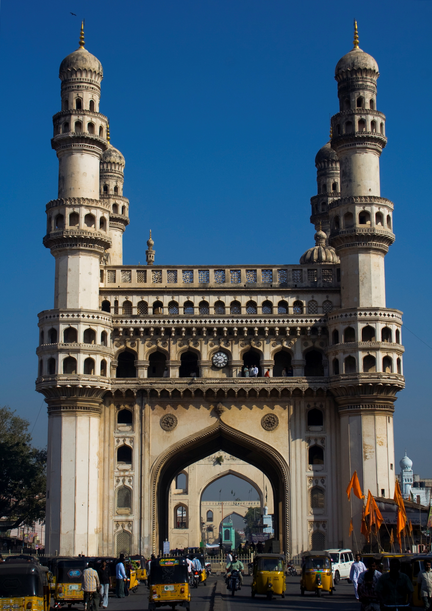
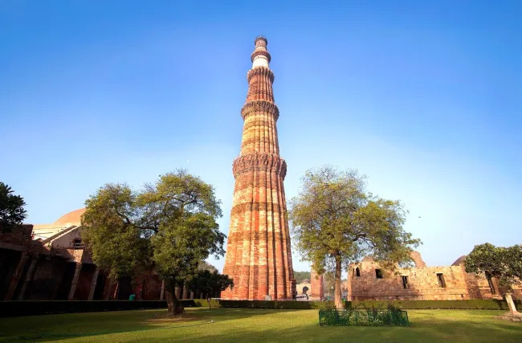

Some Historical Places Of India

Agra Fort is a historic fort located in Agra, Uttar Pradesh, India. Built by Mughal emperor Akbar in the mid-16th century and later renovated by his grandson Shah Jahan, the fort is a UNESCO World Heritage Site and one of the finest examples of Mughal architecture in India. The fort is surrounded by a moat and massive walls that are 70 feet high and features several beautiful buildings such as Diwan-i-Khas, Diwan-i-Am, Jahangir Palace, Khas Mahal, Sheesh Mahal, and Musamman Burj. Read more...

The Taj Mahal is a mausoleum located in Agra, Uttar Pradesh, India. It was commissioned by Mughal Emperor Shah Jahan in memory of his beloved wife, Mumtaz Mahal, and was completed in 1653. The Taj Mahal is widely regarded as one of the most beautiful buildings in the world and is a UNESCO World Heritage Site.The Taj Mahal is also a testament to the skill and craftsmanship of the Mughal architects and artisans who built it. Read more...

Fatehpur Sikri is a historic city located near Agra in the state of Uttar Pradesh, India. It was founded by Mughal Emperor Akbar in 1571 and served as the capital of the Mughal Empire for around 14 years before being abandoned due to a lack of water.Fatehpur Sikri is a UNESCO World Heritage Site and is known for its beautiful architecture and unique blend of Indian, Persian, and Islamic styles. Read more...

Mysore Palace, also known as the Amba Vilas Palace, is a historic palace located in the city of Mysore in the state of Karnataka, India. It was the official residence of the Wodeyar dynasty, who ruled the Kingdom of Mysore from 1399 to 1950.The palace was originally built in the 14th century but underwent several renovations and expansions over the centuries. Read more...

Delhi Fort, also known as the Red Fort, is a historic fort located in Old Delhi, India. It was built by Mughal Emperor Shah Jahan in the mid-17th century and served as the residence of the Mughal Emperors for around 200 years.The fort also features several gardens, fountains, and water channels, which add to its beauty and grandeur. Read more...

The Khajuraho temples are a group of Hindu and Jain temples located in Khajuraho, a town in the state of Madhya Pradesh, India. They were built between the 9th and 11th centuries by the Chandela dynasty and are known for their exquisite carvings and sculptures depicting various aspects of life.The temples are divided into three groups, the Western, Eastern, and Southern, and feature a mix of Nagara and Dravidian architectural styles. Read more...

Hampi's Virupaksha Temple is a famous Hindu temple located in Hampi, a town in the state of Karnataka, India. It is one of the oldest functioning temples in India and is dedicated to Lord Shiva.The temple was built in the 7th century and has undergone several renovations over the centuries. Read more...

Charminar is a famous monument and mosque located in Hyderabad, the capital city of the southern Indian state of Telangana. It was built in 1591 by Sultan Muhammad Quli Qutb Shah to commemorate the end of a deadly epidemic that had ravaged the city.The Charminar is surrounded by a bustling marketplace that is known for its colorful bangles, traditional clothing, and delicious street food. Read more...
